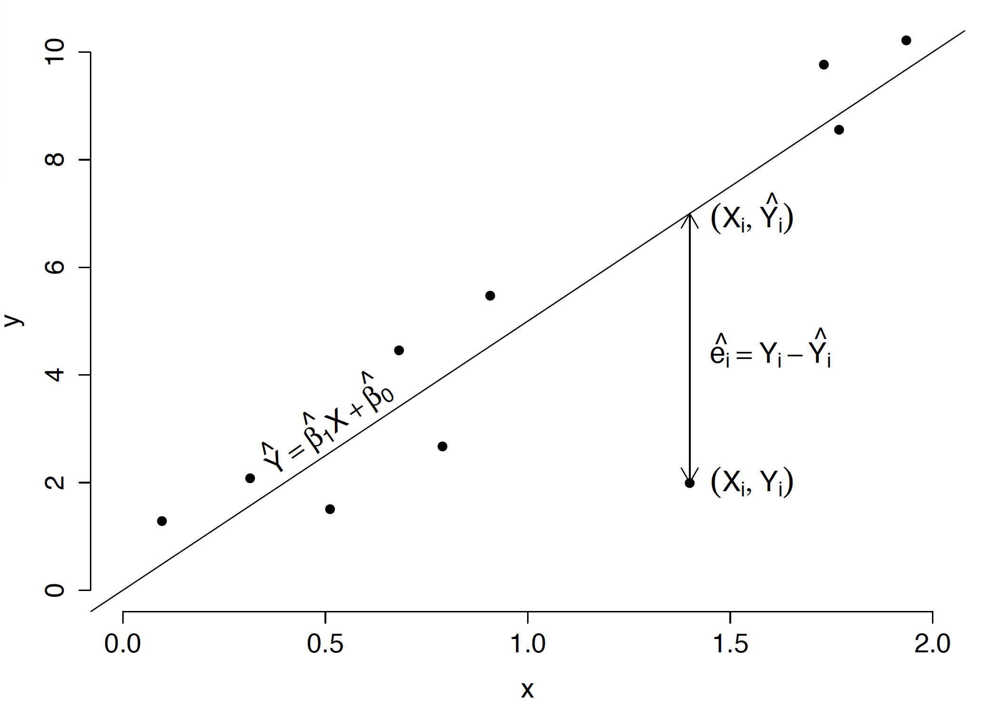
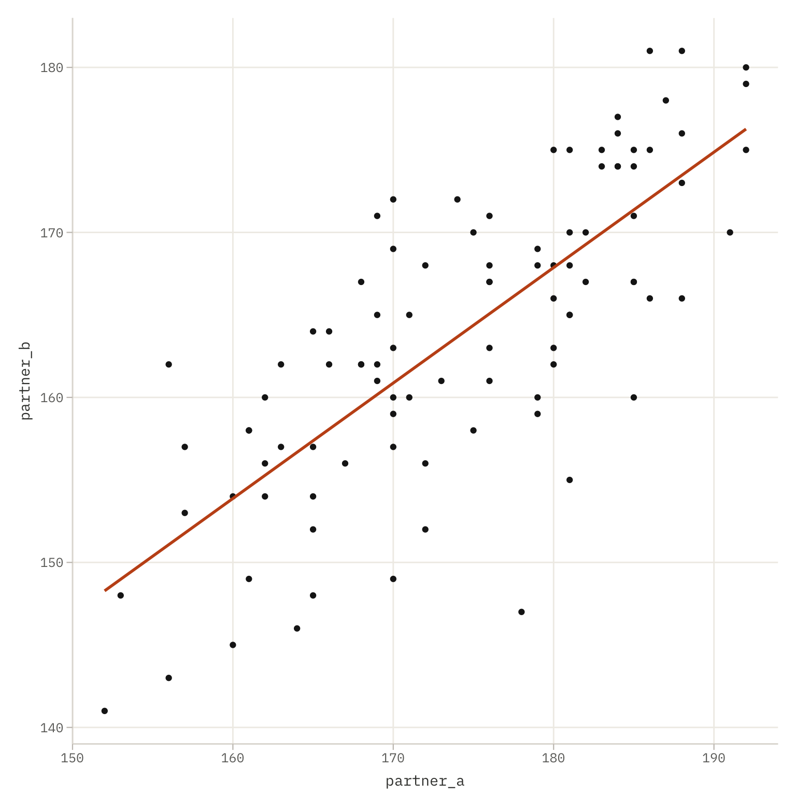
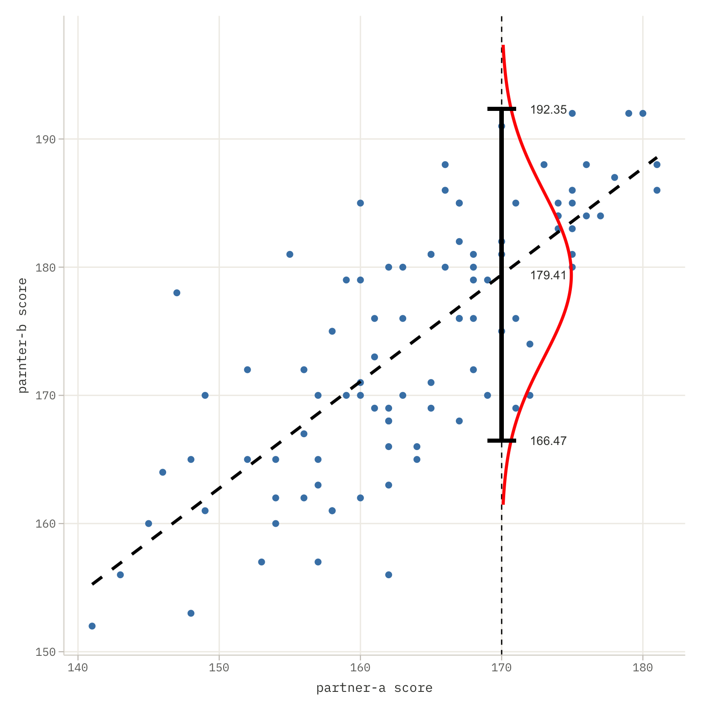
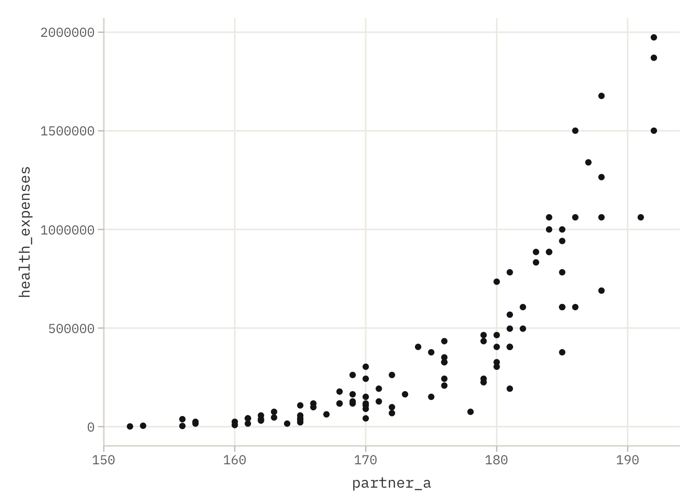
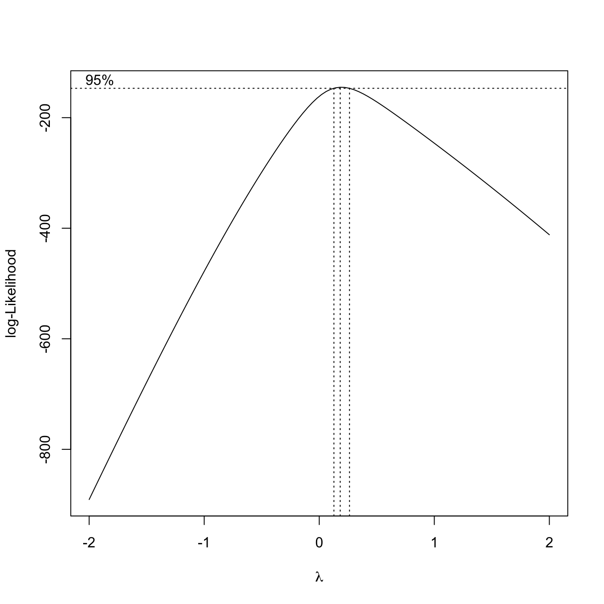

The message came through onion routing at 3:47 a.m. No sender. No greeting.
I need to know where my partner’s MedScore should fall. I have a clinic’s worth of pairs. I’ll pay double rate.
Beta was already at the terminal. Double rate for a correlation meant one of two things, she thought: someone very wealthy, or someone very afraid. The data arrived five minutes later, clean and well-formatted. Ninety-six LifeContract pairs pulled from a single District 12 clinic, each row holding two numbers: partner_a, the MedScore of one partner, and partner_b, the MedScore of the other. Someone had access to records they should not have had. Beta did not ask where from.
The scatter plot assembled itself inside her neural implant like a constellation, points suspended in the dark of the room. The pattern was immediate and unsurprising. The higher one partner’s MedScore, the higher the other’s, a diagonal drift from the low-160s into the high-180s. People pair within their district, their scoring bracket, their statistical future. Love in WaszKrak has its own regression line, and this one climbed at roughly seven-tenths of a point for every point of partner_a, lifting off an intercept somewhere in the low forties. A little more than half the variation in one partner explained by the other. Strong, not perfect. Strong enough.
She fit the line properly, then asked it the only question that mattered to whoever was paying. For a partner with partner_a at 170, squarely mid-bracket, the model returned a predicted partner_b near 179, and around it a ninety-five percent prediction interval that ran from the mid-160s to the low 190s. Wide. Wider than the client would like. A single MedScore does not pin a partner’s score to a point; it names a range, and the range was broad enough to hold most of a district inside it.
“Someone wants to know if their partner is statistically compatible,” Bit said, awake now, reading over her shoulder.
“Or someone wants to know what score a partner should have,” Beta replied. “To avoid being dragged down by association.”
Neither of them said anything for a moment. TierCare had been folding partner scores into treatment allocation for two years. Household health index, they called it: live with someone low-scoring and your own priority falls. Love as systemic risk, priced and indexed.
She sent the report. Scatter plot, fitted line, prediction interval, all of it clean. The reply came back in thirty seconds, far too fast for someone who had just read five pages of statistics, and it did not arrive on the same channel. It came from a verified government node. District 23 administrative subnet.
Thank you. One more thing. We are preparing a legislative proposal to formalize partner-scoring compatibility as an eligibility criterion for Tier 1 healthcare. We need this correlation presented as causal, not associative. Can you reframe the methodology accordingly?
Beta stared at the screen for a long time.
The data had not changed. The slope was still a slope, a statement that two things move together and nothing more. But dressed in the right language and fed into the right committee, it would read as something else entirely: your partner determines your right to live.
“They are not asking us to fake the data,” Bit said slowly.
“No,” Beta agreed. “Just to lie about what it means.”
She looked at the line still floating in her implant. Ninety-six pairs, ninety-six futures flattened onto a single equation, and someone in District 23 who wanted to turn that equation into law.
Before she could answer them, though, she had to be sure she understood the line herself, exactly and without flattery. Was the intercept real, or was it an artifact, would a model forced through zero, no floor, no baseline, fit these pairs just as well? The slope she read off the plot: seven-tenths. But how much of partner_b did it actually account for, and how much was scatter the line would never catch? And that prediction interval, the thing the client truly wanted, how wide did it really run, and what did its width say about how little a single score can promise about the person beside you?
Those were the questions to settle before anyone reframed anything. The data would answer them plainly. What District 23 did with the answers was another matter.
4.2 The Formula: Simple Regression
Beta received data with two variables in order to model the relationship between them and predict one based on the another. This can be done using what is known as simple regression model. Let’s see how.
In simple regression, we examine the relationship between two quantitative variables, let’s label them as \(y\) and \(x\) (In this example, there is only one predictor, so to simplify the notation we use \(x\) instead of \(X_1\)). The simple regression model for an \(n\)-element sample has the form
where \(y_i\) is the value of response variable for observation \(i\), \(x_i\) is the value of predictor variable for observation \(i\), \(\varepsilon_i\) is random disturbance with distribution \(\varepsilon_i \sim \mathcal{N}(0,\sigma^2)\), while \(\beta_0, \beta_1\) are model coefficients, called intercept and slope, respectively.
In matrix form, this model can be written as
\[
y = \beta_0 + x \beta_1 + \varepsilon,
\tag{4.1}\]
where \(y\) and \(x\) are column vectors of the length \(n\) and \(\varepsilon \sim \mathcal{N}(0,\sigma^2I_{n\times n})\).
Equivalently, we can write this model as
\[
y_{i} \sim \mathcal{N}(\beta_0 + x_i \beta_1, \sigma^2), \quad 1 \leq i \leq n,
\]
where variable \(y\) has a normal distribution with variance \(\sigma^2\) and mean \(x_i \beta_1 + \beta_0\).
Estimates for parameters \(\beta_1\) and \(\beta_0\) of the model can be determined from equation Equation 3.5, which for simple regression simplifies to
where \(\text{cov}(x,y)\) denotes the sample covariance for vectors \(x\) and \(y\), \(\text{var}(x)\) denotes the sample variance of vector \(x\), and \(\bar{x}\) denotes the mean of vector \(x\).
Having determined parameter estimates for the model, we can also calculate residual values, that is, estimates for random disturbances, determined as \(\hat{\varepsilon}_i = y_i - \hat{\beta}_0\) - _1 x_i. The least squares method guarantees that the regression line described by equation \(y = \hat{\beta}_0 + \hat{\beta}_1 x\) minimizes the sum of squared residuals for all observations (see Figure 4.1).

Figure 4.1: Illustration for the simple regression model. Points correspond to observations described by pairs \((x_i, y_i)\). The diagonal line corresponds to the linear regression model chosen to minimize the sum of squared residuals. The residual value is the vertical distance from observation \((x_i, y_i)\) to the prediction placed on the trend line \((x_i, \hat{y}_i(x_i))\). The distance is calculated only in the \(y\) coordinate, not as the minimum distance from the point to the curve. The least squares method minimizes the sum of squared residuals \(RSS = \sum_{i=1}^{n}(y_i - \hat{y}_i)^2\).
For example, assume we have a set of five observations and two quantitative variables \(y\) and \(x\). The Equation 4.1 describes a linear regression model with matrix notation:
where \((y_1, y_2, y_3, y_4, y_5)\) is a five-element vector with measurements of trait \(y\), \((x_1, x_2, x_3, x_4, x_5)\) is a five-element vector with values of trait \(x\), and \((\varepsilon_1, \varepsilon_2, \varepsilon_3, \varepsilon_4, \varepsilon_5)\) is a five-element vector corresponding to random disturbance \(\varepsilon \sim \mathcal{N}(0, \sigma^2 I_{5 \times 5})\).
When analyzing a linear model, we are often interested in whether the relationship between variables \(x\) and \(y\) is significantly different than \(0\). Formulating this question in the language of linear models, we obtain a null hypothesis concerning coefficient \(\beta_1\) indicating no relationship:
\[
H_0: \beta_1 = 0,
\]
and an alternative hypothesis indicating a non-zero relationship:
\[
H_A: \beta_1 \neq 0.
\]
If testing yields a p-value smaller than the assumed significance level \(\alpha\), we will say that we have grounds to reject the null hypothesis and thus accept that the relationship between variables \(x\) and \(y\) is significantly different from \(0\). Usually \(\alpha=0.05\), but the choice of significance level depends on the issue being tested, the number of hypotheses tested, and other factors.
4.3 The Terminal: Let’s start simple
The dataset used in this section comes from the RougeLM package. Loading it requires a single call to library(), after which the medical dataset becomes available in the current R session. The dataset contains 96 LifeContract pairs: the MedScore of each partner (partner_a, partner_b) and their joint annual healthcare expenditure (health_expenses).
head() displays the first six rows of the dataset — enough to confirm the structure before any analysis begins. The columns partner_a and partner_b are continuous MedScore values on the 0–200 scale. Both are required for the regression model fitted below.
4.3.1 Show me the data
Before fitting any model it is worth looking at the data. A scatter plot reveals whether a linear relationship is plausible, whether there are obvious outliers, and whether the variance appears constant across the range of the predictor. The ggplot2 package provides a flexible grammar for building plots layer by layer.
library("ggplot2")ggplot(medical, aes(x = partner_a, y = partner_b)) +geom_point() +geom_smooth(method ="lm", se =FALSE)

Figure 4.2: MedScore of Partner A (x-axis) versus Partner B (y-axis) for 96 LifeContract pairs. Each point represents one pair. The diagonal line is the ordinary least-squares regression line fitted without a confidence band.
The call is built from three components.
ggplot(medical, aes(x = partner_a, y = partner_b)) initialises the plot and declares the aesthetic mapping: which variable goes on which axis. No geometry is drawn yet, this line only sets up the coordinate system and the mapping that all subsequent layers will inherit.
geom_point() adds a point layer: one dot per row of the dataset, placed at the coordinates declared in aes(). This is the scatter plot proper. With no additional arguments the points use default size, shape, and colour.
geom_smooth(method = "lm", se = FALSE) adds a smoothing layer. The argument method = "lm" instructs ggplot2 to fit an ordinary least-squares line through the points, the same model that lm() fits below. Setting se = FALSE suppresses the shaded confidence band around the line, keeping the plot uncluttered. When se = TRUE (the default) the band shows the 95% pointwise confidence interval for the conditional mean.
The positive slope visible in the plot is consistent with selective pairing: partners tend to have similar MedScores because they form pairs within the same district, scoring bracket, and statistical future.
4.3.2 Fitting the model with an intercept
The function lm() fits a linear model by ordinary least squares. Its two essential arguments are a formula and a data frame.
model_med_01 <-lm(partner_b ~ partner_a, data = medical)
The formula partner_b ~ partner_a uses R’s formula notation, where the tilde ~ separates the response variable on the left from the predictor on the right. Reading it aloud: “partner_b as a function of partner_a”. R automatically adds an intercept unless instructed otherwise, so the model fitted is:
The result object model_med_01 is a list containing the fitted coefficients, residuals, fitted values, and various diagnostics. Printing it directly shows only the coefficients; summary() extracts the full inferential output.
summary(model_med_01)
Call:
lm(formula = partner_b ~ partner_a, data = medical)
Residuals:
Min 1Q Median 3Q Max
-19.4685 -3.9208 0.8301 3.9538 11.1287
Coefficients:
Estimate Std. Error t value Pr(>|t|)
(Intercept) 41.93015 10.66162 3.933 0.000161 ***
partner_a 0.69965 0.06106 11.458 < 2e-16 ***
---
Signif. codes: 0 '***' 0.001 '**' 0.01 '*' 0.05 '.' 0.1 ' ' 1
Residual standard error: 5.928 on 94 degrees of freedom
Multiple R-squared: 0.5828, Adjusted R-squared: 0.5783
F-statistic: 131.3 on 1 and 94 DF, p-value: < 2.2e-16
Reading summary() proceeds column by column in the Coefficients table:
Estimate: the point estimate of each coefficient. (Intercept) stands for \(\hat\beta_0\); partner_a for \(\hat\beta_1\), the slope. The slope tells us how many units partner_b is predicted to increase for each one-unit increase in partner_a.
Std. Error: the standard error of the estimate, measuring its sampling uncertainty. A smaller standard error relative to the estimate indicates more precise estimation.
t value: the test statistic for the null hypothesis that the coefficient equals zero: \(t = \hat\beta / \text{se}(\hat\beta)\). Large absolute values provide evidence against the null. From Section 3.5.2 we know that this statistics follow the t-Student distribution.
Pr(>|t|): the two-sided p-value for that t-test. Values below the chosen significance level \(\alpha\) (commonly 0.05) are flagged with stars: *** for \(p < 0.001\), ** for \(p < 0.01\), * for \(p < 0.05\).
Below the coefficient table, summary() also reports:
Residual standard error: an estimate of \(\hat\sigma\), the standard deviation of the residuals. Smaller values indicate better fit.
Multiple R-squared: the proportion of variance in partner_b explained by the model. A value of, for example, 0.55 means that 55% of the variability in Partner B’s MedScore is accounted for by Partner A’s MedScore.
Adjusted R-squared: a version of \(R^2\) penalised for the number of predictors. More relevant when comparing models with different numbers of variables.
F-statistic and its p-value: a joint test of whether all slope coefficients are simultaneously zero. In simple regression with one predictor this is equivalent to the t-test on the slope.
4.3.3 Fitting the model without an intercept
The model formula notation is a highly expressive mechanism for describing the relationships between dependent and independent variables. In the following sections, we will explore various symbols that allow us to control the structure of the X matrix. For example, adding the symbol -1 or +0 to the formula ensures that no constant term is included in the experimental matrix.
model_med_02 <-lm(partner_b ~ partner_a -1, data = medical)summary(model_med_02)
Call:
lm(formula = partner_b ~ partner_a - 1, data = medical)
Residuals:
Min 1Q Median 3Q Max
-20.2151 -3.7001 0.2849 4.2928 15.4519
Coefficients:
Estimate Std. Error t value Pr(>|t|)
partner_a 0.93941 0.00372 252.6 <2e-16 ***
---
Signif. codes: 0 '***' 0.001 '**' 0.01 '*' 0.05 '.' 0.1 ' ' 1
Residual standard error: 6.363 on 95 degrees of freedom
Multiple R-squared: 0.9985, Adjusted R-squared: 0.9985
F-statistic: 6.378e+04 on 1 and 95 DF, p-value: < 2.2e-16
The -1 in the formula suppresses the intercept. Adding -1 (or equivalently +0) to the right-hand side of a formula tells lm() to fit the model through the origin — that is, to constrain \(\hat\beta_0 = 0\). The model becomes:
This constraint is only justified when the response is truly zero when the predictor is zero. In the MedScore context it would mean: if Partner A has a MedScore of zero, Partner B must also be predicted to have a MedScore of zero. Whether that is a reasonable substantive assumption should be decided from domain knowledge, not from the data alone.
Removing the intercept also changes the interpretation of \(R^2\): without an intercept, \(R^2\) is computed relative to the zero baseline rather than the sample mean, and can appear artificially large. The Adjusted R-squared in the output of a no-intercept model should therefore not be compared directly with the adjusted \(R^2\) from a model that includes an intercept.
Comparing the two coefficient tables reveals whether the intercept carries meaningful information. If the estimate of \(\hat\beta_0\) in model_med_01 is not significantly different from zero, and if the slope estimate changes little between the two models, the simpler no-intercept model may be adequate. If the intercept is significant, dropping it distorts the slope estimate.
4.3.4 Comparing the two models with a likelihood ratio test
Data modelling typically involves constructing a number of competing models that describe the relationship between variables in different ways. The natural question that arises is which of these models better describes the observed data. Statistical tests allow us to compare models, determining whether one of them fits the data significantly better.
The generic function anova(), when called with two nested lm objects, performs a likelihood ratio test comparing the smaller model against the larger one. The two models must be nested: one must be a special case of the other obtained by setting one or more coefficients to a fixed value (usually 0).
In our example model_med_02 is nested within model_med_01, it is model_med_01 with \(\beta_0\) constrained to zero. Comparing these models using a statistical test will allow us to verify whether the model with an intercept term equal to zero is significantly worse than the model where the intercept term is estimated from the data.
anova(model_med_02, model_med_01)
Analysis of Variance Table
Model 1: partner_b ~ partner_a - 1
Model 2: partner_b ~ partner_a
Res.Df RSS Df Sum of Sq F Pr(>F)
1 95 3846.8
2 94 3303.3 1 543.53 15.467 0.0001606 ***
---
Signif. codes: 0 '***' 0.001 '**' 0.01 '*' 0.05 '.' 0.1 ' ' 1
Table 4.1: Likelihood ratio test comparing the no-intercept model (model_med_02) with the intercept model (model_med_01). The models differ by one degree of freedom — the intercept term.
Reading the output proceeds row by row:
Res.Df: residual degrees of freedom for each model. The no-intercept model has one more residual degree of freedom than the intercept model, because it estimates one fewer parameter.
RSS: residual sum of squares, \(\sum_i (y_i - \hat y_i)^2\), for each model. The intercept model always has RSS \(\leq\) the no-intercept model, because adding a free parameter can only improve or maintain fit.
Df: the difference in the number of parameters between the two models. Here Df = 1 because the only difference is the intercept.
Sum of Sq: the reduction in RSS when moving from the restricted model to the full model: \(\text{RSS}_{\text{restricted}} -
\text{RSS}_{\text{full}}\). A large reduction means the additional parameter explains substantial variance.
F: the F-statistic: \[F = \frac{(\text{RSS}_{\text{restricted}} - \text{RSS}_{\text{full}}) / \Delta df}{\text{RSS}_{\text{full}} / df_{\text{full}}}\] Under the null hypothesis that the restricted model is correct, this statistic follows an \(F\) distribution with \(\Delta df\) numerator degrees of freedom and \(df_{\text{full}}\) denominator degrees of freedom.
Pr(>F): the p-value for the F-test. A small p-value provides evidence against the null hypothesis, that is, evidence that the additional parameter (here the intercept) improves the fit beyond what would be expected by chance. If \(p < \alpha\), the full model with the intercept is preferred. If \(p \geq \alpha\), the data do not provide sufficient evidence to reject the simpler no-intercept model.
The result of this test is consistent with the marginal t-test for the intercept visible in summary(model_med_01): both ask the same question, is \(\beta_0\) significantly different than 0?
For these data, we observe a p-value of \(0.0001606\), so we can conclude that this coefficient is significantly different from zero. The reader may carry out a similar test for coefficient \(\beta_1\).
4.3.5 Interval predictions with linear models
Returning to our original problem, we were interested in predicting the partner MedScore. We will be interested in both point prediction (determining \(\hat{y}\)) and interval prediction. For both purposes, we can use the generic predict() function.
The fact that predict() is a generic function means that the function’s operation depends on the class of the first argument. If the first argument of predict() is a linear model, formulas for the linear model will be used for prediction (more precisely, the predict.lm() function will be used). If the argument is a classifier, generalized regression model, or object of another class, different formulas appropriate to what is the function argument will be used for prediction.
The derivation of the formula for the prediction interval can be found in Section 3.5.6. The example below determines point and interval estimates at confidence level \(0.95\) for the partner’s score
The prediction interval at level \(0.95\) is \(CI_{0.95} = [166.4681, 192.3463]\), which is quite wide. We present it graphically in Figure 4.3.

Figure 4.3: Prediction interval for partner-b’s MedScore if partner-a’s score is 170. The confidence interval estimate was performed based on a linear model using the predict() function. The resulting confidence interval is quite wide, which is related to high variability in the data (high \(\sigma^2\)) and a small number of observations that don’t allow for precise estimation of model parameters. The dashed line marks the linear trend estimated by the model. The marked Gaussian distribution concerns the prediction for \(x=170\); this confidence interval can be moved along the trend line to obtain confidence intervals for other observations as well.
4.4 The Case: The Shape of Cost
Follow the money
The second message arrived at 4:23 a.m. Same verified node. District 23 administrative subnet.
One more task. We need a regression model estimating healthcare expenditure as a function of MedScore. The dataset is the one you already hold. The legislative committee meets in six days.
“They did not even wait to see if we would answer the first one,” Bit said.
“They know we kept the money,” Beta answered flatly.
It was the same ninety-six pairs, the same clinic, but this time she pulled the third column, the one she had ignored the night before: health_expenses, the joint annual healthcare cost for each LifeContract pair, in WaszKrak credits. She ran the scatter plot before doing anything else, old habit, look before you calculate. Partner_a along the bottom, expenditure up the side.
The shape was wrong. Not corrupted-data wrong, curve-pretending-to-be-a-line wrong. At the low end of MedScore the costs did not sit near the others; they detonated, a handful of pairs climbing past a million and a half credits while the rest of the district hugged the floor. At the high end the points flattened and pulled together, dense and calm. And the spread itself changed as the eye traveled: enormous scatter among low-scoring pairs, tight and orderly among high-scoring ones. The relationship existed, it plainly increased, but it bent, and its variance bent with it.
“Linear regression will fit,” Bit said, reading the residual cloud over her shoulder. “R-squared around 0.6. Decent enough for a committee report.”
“It will be wrong,” Beta said.
“It will be usable.”
She closed the plot without answering and picked up the encrypted line to District 9. The Statistician answered on the third ring, which meant she had not been sleeping either.
“Variance increasing with the fitted values,” Beta said, without greeting. “Expenditure data. Strictly positive. Heavy right tail. A straight line through it underestimates both ends and the residuals fan open like a megaphone.”
A pause. The scratch of a pencil.
“Box-Cox,” the old woman said simply. “Do not guess the shape. Find lambda. Let the data tell you what power it wants to be raised to.”
Beta ran the profile log-likelihood over lambda and watched the curve rise to a single clean peak. The maximum sat close to zero, close enough that the confidence interval all but embraced the log transform, but not exactly zero, a shade above. She read the optimum near a fifth of the way up from zero and used it, raising expenditure to that small power and rebuilding the model on the transformed response. The fanning collapsed. The residuals settled into something that looked, at last, like honesty. On the new scale the relationship ran straight and the spread held even from the poorest pairs to the richest.
The transformed model was clean, well-behaved, statistically valid. And when she back-transformed its predictions into credits, the gap it described was brutal in its tidiness. A pair deep in District 7, low MedScore, the kind of household TierCare systematically deprioritized, was predicted to cost the system many times what a high-scoring District 23 pair would. The curve she had straightened to satisfy the assumptions was, underneath, a curve of who costs what to keep alive.
Neither of them spoke for a moment.
“The model is correct,” Beta said finally.
“I know.”
“Low-scoring pairs are genuinely more expensive. Worse baseline health, delayed diagnoses, no preventive care. The system underfunds them for years and then pays for the crisis.”
“I know, Beta.”
“So when D23 takes this to the committee, they will use it to argue that low-MedScore patients are a fiscal burden. That rationing their care is economically rational. That the data says so.”
Bit leaned back and looked at the ceiling. Outside, a surveillance drone hummed past the broken window, its light sweeping across walls papered with printed regression outputs and old equations.
“The model is correct,” he said slowly, echoing her. “And it will be used to justify exactly what created the pattern in the first place.”
Beta did not send it. Not yet. But before the argument about what the model meant, there was still the matter of building it correctly, and that was not yet finished. She had eyeballed the curvature; the data could confirm it. Which power, exactly, straightened this relationship and stilled its variance, and how sure could she be of that value before staking a report on it? Was the plain logarithm, the simplest, most legible choice, close enough to the optimum to use in its place, or did the costs demand something else? And once the response was transformed and the line refit, did the residuals finally lie flat, or did some structure still hide in them?
Those questions had answers, and the answers lived in the data, not in District 23’s committee room. Outside, District 7 was still dark. The mortality rate there was 18.7 per thousand. The model would not change that number. It would only explain it, and whether the explanation saved anyone or merely made the policy look cleaner depended on someone she had never met, whose name she still did not know.
The cursor blinked on the send button. Beta left it blinking, and went to find lambda.
4.5 The Formula: Box Cox Transformation
In linear models, we assume a linear and additive relationship between variable \(y\) and variables \(X\). However, this is not a major limitation because many nonlinear models can be linearized by applying appropriate variable transformations. For example:
A power relationship \(y = a x^b\) can be transformed to linear by using log-transformed variables \(y' = \log(y)\), \(x' = \log(x)\).
An exponential relationship \(y = a \exp(xb)\) can be transformed to linear by log-transforming the response variable \(y' = \log(y)\).
A relationship \(y = x/(ax - b)\) can be transformed to linear by inverse transformations \(y'=1/y\) and \(x'=1/x\).
In Section 3.2 we discussed a bit how to conver real-world concepts into quantitative numbers, that can be included to a model. The same applies to the response variable. In certain situations, we expect a monotonic but not necessarily linear relationship between the linear combination \(X \beta\) and the response variable \(y\). In such situations, applying an appropriate transformation of variables often allows converting a nonlinear relationship to a linear one. In this section, we present selected commonly used classes of transformations of the response variable.
A fairly broad class of transformations is the Box-Cox class, indexed by parameter \(\lambda\) and described by the formula
If we don’t know which \(\lambda\) to use, we can use the log-likelihood function to estimate it (see an example below).
A very popular transformation is the logarithmic transformation. While it falls into the Box-Cox class, quite ofen a special version is considered with unknown shift parameter. In other words, we consider the a family of transformations of the form
\[
y' = \log(y + \alpha).
\tag{4.3}\]
The parameter \(\alpha\) may be estimtated with the use of log-likelihood criterion.
4.6 The Terminal: Let’s Cox!
4.6.1 Show me the data
The third variable in the medical dataset is health_expenses, i.e. the joint annual healthcare expenditure for each LifeContract pair in WaszKrak world. Before fitting any model it is again worth looking at the data.
ggplot(medical, aes(x = partner_a, y = health_expenses)) +geom_point()

Figure 4.4: Partner A’s MedScore (x-axis) versus joint annual healthcare expenditure (y-axis) for 96 LifeContract pairs. The relationship exists but bends sharply at the low end of MedScore, expenditure explodes for low-scoring pairs and flattens for high-scoring ones. A straight line would fit poorly.
The scatter plot reveals a pattern that is not linear. At the low end of partner_a, healthcare expenditure varies enormously and reaches very large values. At the high end, costs are lower and more tightly clustered. The relationship exists, it is clearly increasing, but it bends. A straight line drawn through these points would systematically underestimate expenditure at both extremes and overestimate it in the middle. More importantly, the variance of expenditure grows as MedScore decreases, which violates the homoscedasticity assumption of ordinary least squares.
In a second we will consider models with various transformations of the y-variable. To provide a point of reference, let’s see what the value of the log-likelihood function is for the untransformed model.
model_med_03 <-lm(health_expenses ~ partner_a, data = medical)logLik(model_med_03)
'log Lik.' -1331.453 (df=3)
Residual plots (not shown here) would confirm heteroscedasticity: residuals fade out as fitted values decrease. The model is not wrong in direction, but it is wrong in shape.
4.6.2 Choosing a transformation with Box-Cox
The Box-Cox family of power transformations provides a systematic way to identify which transformation of the response variable best stabilises variance and linearises the relationship. The family is indexed by a single parameter \(\lambda\):
The function boxcox() from the MASS package estimates the optimal \(\lambda\) by maximum likelihood, profiling the log-likelihood over a grid of candidate values.
library("MASS")bc <-boxcox(model_med_03)

Figure 4.5: Profile log-likelihood for the Box-Cox parameter lambda. The curve peaks at the value of lambda that maximises the likelihood of the transformed model. The dashed vertical lines mark the 95% confidence interval for lambda. If the interval contains 1, no transformation is needed; if it contains 0, a log transformation is appropriate.
boxcox() takes a fitted lm object as its first argument and uses the predictor structure already specified in that model. It produces a plot automatically, the x-axis shows candidate values of \(\lambda\) and the y-axis shows the profile log-likelihood. The optimal \(\lambda\) is the value at the peak of the curve.
bc_parameter <- bc$x[which.max(bc$y)]bc_parameter
[1] 0.1818182
bc$x is the vector of candidate \(\lambda\) values over which the log-likelihood was evaluated; bc$y is the corresponding vector of log-likelihood values. which.max(bc$y) returns the index of the maximum element of bc$y, and bc$x[...] retrieves the \(\lambda\) value at that index. The result is the point estimate of the optimal transformation parameter.
When \(\lambda\) is close to zero, as it typically is for right-skewed, strictly positive response variables like healthcare expenditure, the log transformation (\(\lambda = 0\)) is a natural and interpretable choice. The 95% confidence interval shown in the plot (bounded by the two dashed vertical lines) indicates the range of \(\lambda\) values consistent with the data; if this interval contains zero, a log transformation is formally justified.
4.6.3 Applying the Box-Cox transformation
Once \(\lambda\) is chosen, the transformed response is computed manually and added to the dataset as a new column.
Figure 4.6: Partner A’s MedScore (x-axis) versus Box-Cox transformed healthcare expenditure (y-axis). After transformation the relationship is more nearly linear and the variance is more uniform across the range of MedScore, both conditions required by the linear model.
The expression (medical$health_expenses^bc_parameter - 1) / bc_parameter implements the Box-Cox formula directly. Three steps are executed in order: first, each value of health_expenses is raised to the power bc_parameter; second, 1 is subtracted from each result; third, the result is divided by bc_parameter. The transformed values are stored in a new column health_bc attached to the medical data frame using the $ operator.
Comparing the two scatter plots, health_expenses versus partner_a before transformation, and health_bc versus partner_a after, makes the effect of the transformation visible. The fanning pattern of the raw data gives way to a more linear cloud of points with more uniform spread. A linear model fitted to health_bc will satisfy the regression assumptions more closely than one fitted to the raw expenditure.
4.6.4 Logarithmic transformation with unknown shift
A closely related family of transformations is the shifted logarithm:
\[y' = \log(y + \alpha),\]
where \(\alpha\) is an unknown shift parameter estimated from the data. This is useful when the response has values near zero, adding \(\alpha\) before taking the log prevents undefined results and can improve the fit further. When \(\alpha = 0\) this reduces to the standard log transformation, which is the \(\lambda = 0\) limit of the Box-Cox family.
The function logtrans() from MASS profiles the log-likelihood over a grid of candidate \(\alpha\) values, analogously to boxcox() for \(\lambda\).
Figure 4.7: Profile log-likelihood for the shift parameter alpha in the logarithmic transformation log(health_expenses + alpha). The curve peaks at the value of alpha that maximises the likelihood. Positive alpha shifts the distribution away from zero before taking the log.
logtrans() takes the same fitted model as its first argument. The alpha argument specifies the grid of candidate shift values to evaluate: seq(-1200, 20000, 1000) generates a sequence from −1200 to 20,000 in steps of 1,000. Negative values of \(\alpha\) are only feasible if all values of health_expenses exceed \(|\alpha|\), otherwise the log of a non-positive number would be undefined. The function produces a plot automatically with the same structure as boxcox().
lt$x[which.max(lt$y)]
[1] 14921.21
As with bc$x and bc$y, lt$x contains the candidate \(\alpha\) values and lt$y the corresponding log-likelihood values. lt$x[which.max(lt$y)] extracts the \(\alpha\) that maximises the likelihood, the optimal shift for the logarithmic transformation.
A large positive \(\alpha\) indicates that the raw distribution of health_expenses is far from the log-linear regime, and that shifting it substantially before taking the log is beneficial. When the optimal \(\alpha\) from logtrans() is small relative to the scale of health_expenses, the standard log transformation without a shift is adequate.
4.6.5 Choosing between Box-Cox and log transformation
Both boxcox() and logtrans() use the same criterion, maximum likelihood, but they search over different families of transformations. The Box-Cox family varies the power \(\lambda\); the logarithmic family with shift fixes the functional form as a log but varies the location \(\alpha\).
In practice, the choice between them is often guided by following considerations.
Interpretability. Depending on the variable being described, certain transformations often have a natural interpretation – logarithmic, quadratic or square-root. Rather than choosing transformations based solely on the data, it is worth considering the meaning of the variables being described. For expenditure, a logarithmic transformation is a very common choice.
The confidence interval for \(\lambda\). If the 95% confidence interval shown in the boxcox() plot contains zero, the log transformation is statistically similar from the optimal Box-Cox transformation and the simpler interpretation is preferred.
In the WaszKrak context, the log transformation is the natural choice: expenditure is strictly positive, right-skewed, and spans several orders of magnitude across districts, exactly the conditions for which the log is both statistically appropriate and substantively meaningful.
4.7 Exercises
4.7.1 Exercise 1: Reading the output
Beta has fitted the following model to the medical dataset:
model <-lm(partner_b ~ partner_a, data = medical)summary(model)
The output shows a slope estimate of 0.71 with a standard error of 0.06 and a p-value below 0.001. The intercept estimate is 18.3.
(a) Write down the fitted regression equation using the estimates above. What is the predicted MedScore of Partner B if Partner A has a MedScore of 160?
(b) The p-value for the slope is reported as < 0.001. What null hypothesis is being tested? What does rejecting it mean in the context of LifeContract pairs?
(c) The Adjusted R-squared is 0.58. How much of the variability in Partner B’s MedScore is not explained by Partner A’s MedScore?
4.7.2 Exercise 2: Symmetry of regression
Bit claims that it does not matter which partner is placed on the left-hand side of the formula, the model will give the same result either way.
(a) Fit the two models below and compare their slope estimates:
model_ab <-lm(partner_b ~ partner_a, data = medical)model_ba <-lm(partner_a ~ partner_b, data = medical)
Are the slopes equal? Are they reciprocals of each other? What does this tell you about the symmetry of linear regression?
(b) The correlation coefficient satisfies \(r = r_{AB} = r_{BA}\). Show numerically that the slope of model_ab equals \(r \cdot (s_B / s_A)\), where \(s_A\) and \(s_B\) are the sample standard deviations of partner_a and partner_b respectively. Use cor() and sd() to verify.
(c) Beta and Bit receive a request asking: “what MedScore should my partner have?” Which model should they use — model_ab or model_ba? Explain why the choice of response variable is not a statistical decision but a substantive one.
4.7.3 Exercise 3: Prediction interval
A resident of District 7 has a MedScore of 145. She wants to know the predicted MedScore range for a potential LifeContract partner.
(a) Use predict() to compute a 95% prediction interval for Partner B’s MedScore when Partner A scores 145:
(b) The interval is considerably wider than the confidence interval for the mean. Explain in one sentence the difference between a prediction interval for an individual observation and a confidence interval for the conditional mean.
(c) Bit notices that 145 is near the lower end of the observed range of partner_a. Without fitting a new model, explain why prediction intervals tend to be wider for values of the predictor far from its mean.
4.7.4 Exercise 4: Model without intercept
(a) Fit the no-intercept model and compare it to the intercept model using anova():
model_0 <-lm(partner_b ~ partner_a -1, data = medical)model_01 <-lm(partner_b ~ partner_a, data = medical)anova(model_0, model_01)
At significance level \(\alpha = 0.05\), which model is preferred by the test?
(b) Look at the Multiple R-squared from both summary() outputs. The no-intercept model reports a higher \(R^2\) than the intercept model. Does this mean it fits better? Explain why \(R^2\) values from models with and without an intercept cannot be compared directly.
(c) Under what substantive assumption would a no-intercept model for Partner B’s MedScore be appropriate? Is that assumption reasonable in the WaszKrak context?
4.7.5 Exercise 5: Inference
QuantumCorp publishes a report claiming that “partner MedScores are independent, knowing one partner’s score tells you nothing about the other’s.”
(a) Formulate this claim as a statistical hypothesis about the slope \(\beta_1\) in the model partner_b ~ partner_a.
(b) Using the output of summary(model_ab), identify the test statistic and p-value relevant to this hypothesis. At \(\alpha = 0.05\), do the data support QuantumCorp’s claim?
(c) Beta points out that rejecting the null hypothesis does not prove that the relationship is causal. Name one alternative explanation for the observed correlation between partner MedScores that does not require a direct causal link between them.
(d) The confidence level is set at 95%. If Beta were to repeat this study with 100 independent samples from WaszKrak and compute a 95% confidence interval for \(\beta_1\) each time, approximately how many of those intervals would not contain the true population slope?